install.packages("sotu", dependencies = T)
install.packages("tm", dependencies = T)
install.packages("SnowballC", dependencies = T)
install.packages("wordcloud", dependencies = T)
install.packages("stringr", dependencies = T)11 Text as Data
Recall that we said, four primary goals of social science include:
- Describe and measure
- Has the U.S. population increased?
- Explain, evaluate, and recommend (study of causation)
- Does expanding Medicaid improve health outcomes?
- Predict
- Who will win the next election?
- Discover
- How do policies diffuse across states?
In this section, we start to explore the goal of discovery, seeing what we can learn from text as data.
11.1 Why text?
Words (can) matter. Patterns of word usage can be suggestive of deeper divides.
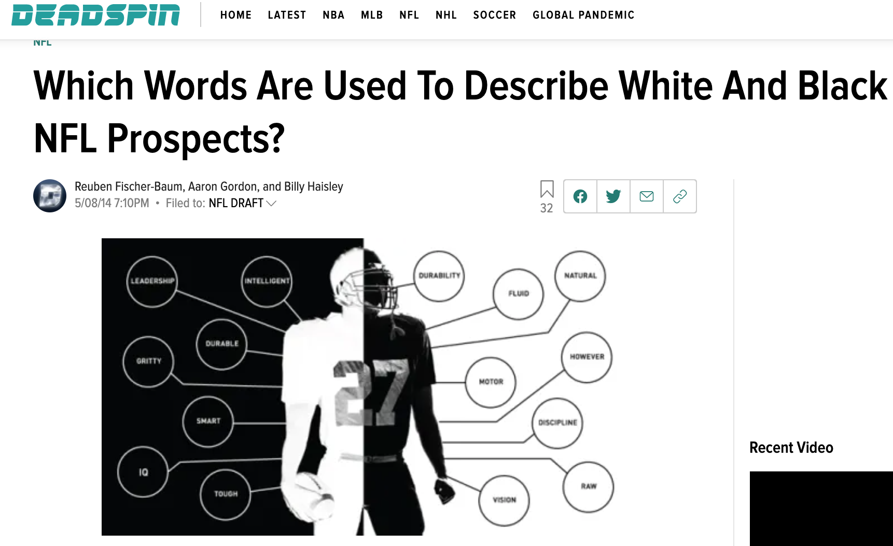
Article from Deadspin
Article from NY Times
Why Use R to analyze text?
- Assist in reading large amounts of text
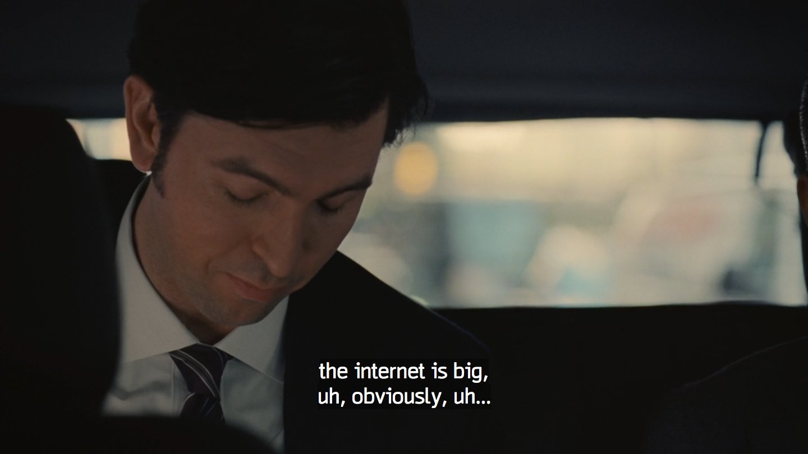 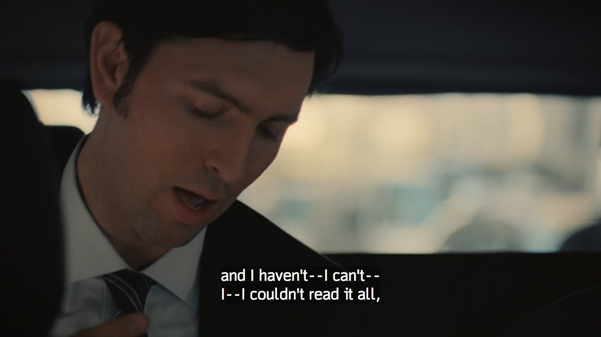
- Efficiently summarize text through quantifying text attributes
- (Can) remove some subjectivity in coding text, allow to discover aspects of text unknown a priori
11.2 R Packages for text
Packages are like apps on your phone. They give you additional functionality. To use the tools in a package you first have to install it.
After you install it, just like on a phone, anytime you want to use the app, you need to open it. In R, we do that with library().
library(sotu)
library(tm)
library(SnowballC)
library(wordcloud)
library(stringr)11.3 Application: State of the Union
For a video explainer of the code for the State of the Union application on pre-processing text and dictionary analysis, see below. (Via youtube, you can speed up the playback to 1.5 or 2x speed.)
The sotu package includes a dataset with the text of every U.S. State of the Union speech. It also includes second dataset with information about the speech. When datasets are stored in a package, you can add them to your environment through the data() function.
data(sotu_meta)
data(sotu_text)We are going to “bind” these together into a new dataframe. That way, the sotu_text is a variable inside of our speeches dataframe.
speeches <- cbind(sotu_meta, sotu_text)
names(speeches)[1] "X" "president" "year" "years_active" "party"
[6] "sotu_type" "sotu_text" 11.3.1 Cleaning Text
Note that when working with raw text data, we usually do want our variables to be character variables and not factor variables. Here, every cell is not a category. Instead, it is a speech!
class(speeches$sotu_text)[1] "character"Text is messy data. We may want to spruce it up a bit by removing some of the non-essential characters and words, and moving everything to lowercase.
## Example of speech
speeches$sotu_text[1][1] "Fellow-Citizens of the Senate and House of Representatives: \n\nI embrace with great satisfaction the opportunity which now presents itself of congratulating you on the present favorable prospects of our public affairs. The recent accession of the important state of North Carolina to the Constitution of the United States (of which official information has been received), the rising credit and respectability of our country, the general and increasing good will toward the government of the Union, and the concord, peace, and plenty with which we are blessed are circumstances auspicious in an eminent degree to our national prosperity.\n\nIn resuming your consultations for the general good you can not but derive encouragement from the reflection that the measures of the last session have been as satisfactory to your constituents as the novelty and difficulty of the work allowed you to hope. Still further to realize their expectations and to secure the blessings which a gracious Providence has placed within our reach will in the course of the present important session call for the cool and deliberate exertion of your patriotism, firmness, and wisdom.\n\nAmong the many interesting objects which will engage your attention that of providing for the common defense will merit particular regard. To be prepared for war is one of the most effectual means of preserving peace.\n\nA free people ought not only to be armed, but disciplined; to which end a uniform and well-digested plan is requisite; and their safety and interest require that they should promote such manufactories as tend to render them independent of others for essential, particularly military, supplies.\n\nThe proper establishment of the troops which may be deemed indispensable will be entitled to mature consideration. In the arrangements which may be made respecting it it will be of importance to conciliate the comfortable support of the officers and soldiers with a due regard to economy.\n\nThere was reason to hope that the pacific measures adopted with regard to certain hostile tribes of Indians would have relieved the inhabitants of our southern and western frontiers from their depredations, but you will perceive from the information contained in the papers which I shall direct to be laid before you (comprehending a communication from the Commonwealth of Virginia) that we ought to be prepared to afford protection to those parts of the Union, and, if necessary, to punish aggressors.\n\nThe interests of the United States require that our intercourse with other nations should be facilitated by such provisions as will enable me to fulfill my duty in that respect in the manner which circumstances may render most conducive to the public good, and to this end that the compensation to be made to the persons who may be employed should, according to the nature of their appointments, be defined by law, and a competent fund designated for defraying the expenses incident to the conduct of foreign affairs.\n\nVarious considerations also render it expedient that the terms on which foreigners may be admitted to the rights of citizens should be speedily ascertained by a uniform rule of naturalization.\n\nUniformity in the currency, weights, and measures of the United States is an object of great importance, and will, I am persuaded, be duly attended to.\n\nThe advancement of agriculture, commerce, and manufactures by all proper means will not, I trust, need recommendation; but I can not forbear intimating to you the expediency of giving effectual encouragement as well to the introduction of new and useful inventions from abroad as to the exertions of skill and genius in producing them at home, and of facilitating the intercourse between the distant parts of our country by a due attention to the post-office and post-roads.\n\nNor am I less persuaded that you will agree with me in opinion that there is nothing which can better deserve your patronage than the promotion of science and literature. Knowledge is in every country the surest basis of public happiness. In one in which the measures of government receive their impressions so immediately from the sense of the community as in ours it is proportionably essential.\n\nTo the security of a free constitution it contributes in various ways - by convincing those who are intrusted with the public administration that every valuable end of government is best answered by the enlightened confidence of the people, and by teaching the people themselves to know and to value their own rights; to discern and provide against invasions of them; to distinguish between oppression and the necessary exercise of lawful authority; between burthens proceeding from a disregard to their convenience and those resulting from the inevitable exigencies of society; to discriminate the spirit of liberty from that of licentiousness - cherishing the first, avoiding the last - and uniting a speedy but temperate vigilance against encroachments, with an inviolable respect to the laws.\n\nWhether this desirable object will be best promoted by affording aids to seminaries of learning already established, by the institution of a national university, or by any other expedients will be well worthy of a place in the deliberations of the legislature.\n\nGentlemen of the House of Representatives: \n\nI saw with peculiar pleasure at the close of the last session the resolution entered into by you expressive of your opinion that an adequate provision for the support of the public credit is a matter of high importance to the national honor and prosperity. In this sentiment I entirely concur; and to a perfect confidence in your best endeavors to devise such a provision as will be truly with the end I add an equal reliance on the cheerful cooperation of the other branch of the legislature.\n\nIt would be superfluous to specify inducements to a measure in which the character and interests of the United States are so obviously so deeply concerned, and which has received so explicit a sanction from your declaration. \n\nGentlemen of the Senate and House of Representatives: \n\nI have directed the proper officers to lay before you, respectively, such papers and estimates as regard the affairs particularly recommended to your consideration, and necessary to convey to you that information of the state of the Union which it is my duty to afford.\n\nThe welfare of our country is the great object to which our cares and efforts ought to be directed, and I shall derive great satisfaction from a cooperation with you in the pleasing though arduous task of insuring to our fellow citizens the blessings which they have a right to expect from a free, efficient, and equal government. GEORGE WASHINGTON\n"## clean text
speeches$sotu_text <- tolower(speeches$sotu_text)
speeches$sotu_text <- stripWhitespace(speeches$sotu_text)
speeches$sotu_text <- removeWords(speeches$sotu_text, stopwords(kind="en"))
speeches$sotu_text <- removePunctuation(speeches$sotu_text)
speeches$sotu_text <- removeNumbers(speeches$sotu_text)
#speeches$sotu_text <- stemDocument(speeches$sotu_text) # we will hold offNote: What you might consider non-essential could differ depending on your application. Maybe you want to keep numbers in your text, for example.
11.3.2 Preparing a Corpus
## turn text into corpus
sotu.corpus <- VCorpus(VectorSource(speeches$sotu_text))
## Add meta data into corpus
meta(sotu.corpus, tag= names(sotu_meta), type="indexed") <- sotu_meta
meta(sotu.corpus) X president year years_active party sotu_type
1 1 George Washington 1790 1789-1793 Nonpartisan speech
2 2 George Washington 1790 1789-1793 Nonpartisan speech
3 3 George Washington 1791 1789-1793 Nonpartisan speech
4 4 George Washington 1792 1789-1793 Nonpartisan speech
5 5 George Washington 1793 1793-1797 Nonpartisan speech
6 6 George Washington 1794 1793-1797 Nonpartisan speech
7 7 George Washington 1795 1793-1797 Nonpartisan speech
8 8 George Washington 1796 1793-1797 Nonpartisan speech
9 9 John Adams 1797 1797-1801 Federalist speech
10 10 John Adams 1798 1797-1801 Federalist speech
11 11 John Adams 1799 1797-1801 Federalist speech
12 12 John Adams 1800 1797-1801 Federalist speech
13 13 Thomas Jefferson 1801 1801-1805 Democratic-Republican written
14 14 Thomas Jefferson 1802 1801-1805 Democratic-Republican written
15 15 Thomas Jefferson 1803 1801-1805 Democratic-Republican written
16 16 Thomas Jefferson 1804 1801-1805 Democratic-Republican written
17 17 Thomas Jefferson 1805 1805-1809 Democratic-Republican written
18 18 Thomas Jefferson 1806 1805-1809 Democratic-Republican written
19 19 Thomas Jefferson 1807 1805-1809 Democratic-Republican written
20 20 Thomas Jefferson 1808 1805-1809 Democratic-Republican written
21 21 James Madison 1809 1809-1813 Democratic-Republican written
22 22 James Madison 1810 1809-1813 Democratic-Republican written
23 23 James Madison 1811 1809-1813 Democratic-Republican written
24 24 James Madison 1812 1809-1813 Democratic-Republican written
25 25 James Madison 1813 1813-1817 Democratic-Republican written
26 26 James Madison 1814 1813-1817 Democratic-Republican written
27 27 James Madison 1815 1813-1817 Democratic-Republican written
28 28 James Madison 1816 1813-1817 Democratic-Republican written
29 29 James Monroe 1817 1817-1821 Democratic-Republican written
30 30 James Monroe 1818 1817-1821 Democratic-Republican written
31 31 James Monroe 1819 1817-1821 Democratic-Republican written
32 32 James Monroe 1820 1817-1821 Democratic-Republican written
33 33 James Monroe 1821 1821-1825 Democratic-Republican written
34 34 James Monroe 1822 1821-1825 Democratic-Republican written
35 35 James Monroe 1823 1821-1825 Democratic-Republican written
36 36 James Monroe 1824 1821-1825 Democratic-Republican written
37 37 John Quincy Adams 1825 1825-1829 Democratic-Republican written
38 38 John Quincy Adams 1826 1825-1829 Democratic-Republican written
39 39 John Quincy Adams 1827 1825-1829 Democratic-Republican written
40 40 John Quincy Adams 1828 1825-1829 Democratic-Republican written
41 41 Andrew Jackson 1829 1829-1833 Democratic written
42 42 Andrew Jackson 1830 1829-1833 Democratic written
43 43 Andrew Jackson 1831 1829-1833 Democratic written
44 44 Andrew Jackson 1832 1829-1833 Democratic written
45 45 Andrew Jackson 1833 1833-1837 Democratic written
46 46 Andrew Jackson 1834 1833-1837 Democratic written
47 47 Andrew Jackson 1835 1833-1837 Democratic written
48 48 Andrew Jackson 1836 1833-1837 Democratic written
49 49 Martin Van Buren 1837 1837-1841 Democratic written
50 50 Martin Van Buren 1838 1837-1841 Democratic written
51 51 Martin Van Buren 1839 1837-1841 Democratic written
52 52 Martin Van Buren 1840 1837-1841 Democratic written
53 53 John Tyler 1841 1841-1845 Whig written
54 54 John Tyler 1842 1841-1845 Whig written
55 55 John Tyler 1843 1841-1845 Whig written
56 56 John Tyler 1844 1841-1845 Whig written
57 57 James K. Polk 1845 1845-1849 Democratic written
58 58 James K. Polk 1846 1845-1849 Democratic written
59 59 James K. Polk 1847 1845-1849 Democratic written
60 60 James K. Polk 1848 1845-1849 Democratic written
61 61 Zachary Taylor 1849 1849-1850 Whig written
62 62 Millard Fillmore 1850 1850-1853 Whig written
63 63 Millard Fillmore 1851 1850-1853 Whig written
64 64 Millard Fillmore 1852 1850-1853 Whig written
65 65 Franklin Pierce 1853 1853-1857 Democratic written
66 66 Franklin Pierce 1854 1853-1857 Democratic written
67 67 Franklin Pierce 1855 1853-1857 Democratic written
68 68 Franklin Pierce 1856 1853-1857 Democratic written
69 69 James Buchanan 1857 1857-1861 Democratic written
70 70 James Buchanan 1858 1857-1861 Democratic written
71 71 James Buchanan 1859 1857-1861 Democratic written
72 72 James Buchanan 1860 1857-1861 Democratic written
73 73 Abraham Lincoln 1861 1861-1865 Republican written
74 74 Abraham Lincoln 1862 1861-1865 Republican written
75 75 Abraham Lincoln 1863 1861-1865 Republican written
76 76 Abraham Lincoln 1864 1861-1865 Republican written
77 77 Andrew Johnson 1865 1865-1869 Republican written
78 78 Andrew Johnson 1866 1865-1869 Republican written
79 79 Andrew Johnson 1867 1865-1869 Republican written
80 80 Andrew Johnson 1868 1865-1869 Republican written
81 81 Ulysses S. Grant 1869 1869-1873 Republican written
82 82 Ulysses S. Grant 1870 1869-1873 Republican written
83 83 Ulysses S. Grant 1871 1869-1873 Republican written
84 84 Ulysses S. Grant 1872 1869-1873 Republican written
85 85 Ulysses S. Grant 1873 1873-1877 Republican written
86 86 Ulysses S. Grant 1874 1873-1877 Republican written
87 87 Ulysses S. Grant 1875 1873-1877 Republican written
88 88 Ulysses S. Grant 1876 1873-1877 Republican written
89 89 Rutherford B. Hayes 1877 1877-1881 Republican written
90 90 Rutherford B. Hayes 1878 1877-1881 Republican written
91 91 Rutherford B. Hayes 1879 1877-1881 Republican written
92 92 Rutherford B. Hayes 1880 1877-1881 Republican written
93 93 Chester A. Arthur 1881 1881-1885 Republican written
94 94 Chester A. Arthur 1882 1881-1885 Republican written
95 95 Chester A. Arthur 1883 1881-1885 Republican written
96 96 Chester A. Arthur 1884 1881-1885 Republican written
97 97 Grover Cleveland 1885 1885-1889 Democratic written
98 98 Grover Cleveland 1886 1885-1889 Democratic written
99 99 Grover Cleveland 1887 1885-1889 Democratic written
100 100 Grover Cleveland 1888 1885-1889 Democratic written
101 101 Benjamin Harrison 1889 1889-1893 Republican written
102 102 Benjamin Harrison 1890 1889-1893 Republican written
103 103 Benjamin Harrison 1891 1889-1893 Republican written
104 104 Benjamin Harrison 1892 1889-1893 Republican written
105 105 Grover Cleveland 1893 1893-1897 Democratic written
106 106 Grover Cleveland 1894 1893-1897 Democratic written
107 107 Grover Cleveland 1895 1893-1897 Democratic written
108 108 Grover Cleveland 1896 1893-1897 Democratic written
109 109 William McKinley 1897 1897-1901 Republican written
110 110 William McKinley 1898 1897-1901 Republican written
111 111 William McKinley 1899 1897-1901 Republican written
112 112 William McKinley 1900 1897-1901 Republican written
113 113 Theodore Roosevelt 1901 1901-1905 Republican written
114 114 Theodore Roosevelt 1902 1901-1905 Republican written
115 115 Theodore Roosevelt 1903 1901-1905 Republican written
116 116 Theodore Roosevelt 1904 1901-1905 Republican written
117 117 Theodore Roosevelt 1905 1905-1909 Republican written
118 118 Theodore Roosevelt 1906 1905-1909 Republican written
119 119 Theodore Roosevelt 1907 1905-1909 Republican written
120 120 Theodore Roosevelt 1908 1905-1909 Republican written
121 121 William Howard Taft 1909 1909-1913 Republican written
122 122 William Howard Taft 1910 1909-1913 Republican written
123 123 William Howard Taft 1911 1909-1913 Republican written
124 124 William Howard Taft 1912 1909-1913 Republican written
125 125 Woodrow Wilson 1913 1913-1917 Democratic speech
126 126 Woodrow Wilson 1914 1913-1917 Democratic speech
127 127 Woodrow Wilson 1915 1913-1917 Democratic speech
128 128 Woodrow Wilson 1916 1913-1917 Democratic speech
129 129 Woodrow Wilson 1917 1917-1921 Democratic speech
130 130 Woodrow Wilson 1918 1917-1921 Democratic speech
131 131 Woodrow Wilson 1919 1917-1921 Democratic written
132 132 Woodrow Wilson 1920 1917-1921 Democratic written
133 133 Warren G. Harding 1921 1921-1923 Republican speech
134 134 Warren G. Harding 1922 1921-1923 Republican speech
135 135 Calvin Coolidge 1923 1923-1925 Republican speech
136 136 Calvin Coolidge 1924 1923-1925 Republican written
137 137 Calvin Coolidge 1925 1925-1929 Republican written
138 138 Calvin Coolidge 1926 1925-1929 Republican written
139 139 Calvin Coolidge 1927 1925-1929 Republican written
140 140 Calvin Coolidge 1928 1925-1929 Republican written
141 141 Herbert Hoover 1929 1929-1933 Republican written
142 142 Herbert Hoover 1930 1929-1933 Republican written
143 143 Herbert Hoover 1931 1929-1933 Republican written
144 144 Herbert Hoover 1932 1929-1933 Republican written
145 145 Franklin D. Roosevelt 1934 1933-1937 Democratic speech
146 146 Franklin D. Roosevelt 1935 1933-1937 Democratic speech
147 147 Franklin D. Roosevelt 1936 1933-1937 Democratic speech
148 148 Franklin D. Roosevelt 1937 1937-1941 Democratic speech
149 149 Franklin D. Roosevelt 1938 1937-1941 Democratic speech
150 150 Franklin D. Roosevelt 1939 1937-1941 Democratic speech
151 151 Franklin D. Roosevelt 1940 1937-1941 Democratic speech
152 152 Franklin D. Roosevelt 1941 1941-1945 Democratic speech
153 153 Franklin D. Roosevelt 1942 1941-1945 Democratic speech
154 154 Franklin D. Roosevelt 1943 1941-1945 Democratic speech
155 155 Franklin D. Roosevelt 1944 1941-1945 Democratic speech
156 156 Franklin D. Roosevelt 1945 1945 Democratic speech
157 157 Franklin D. Roosevelt 1945 1945 Democratic written
158 158 Harry S Truman 1946 1945-1949 Democratic written
159 159 Harry S Truman 1947 1945-1949 Democratic speech
160 160 Harry S Truman 1948 1945-1949 Democratic speech
161 161 Harry S Truman 1949 1949-1953 Democratic speech
162 162 Harry S Truman 1950 1949-1953 Democratic speech
163 163 Harry S Truman 1951 1949-1953 Democratic speech
164 164 Harry S Truman 1952 1949-1953 Democratic speech
165 165 Dwight D. Eisenhower 1953 1953-1957 Republican written
166 166 Harry S Truman 1953 1949-1953 Democratic written
167 167 Dwight D. Eisenhower 1954 1953-1957 Republican speech
168 168 Dwight D. Eisenhower 1955 1953-1957 Republican speech
169 169 Dwight D. Eisenhower 1956 1953-1957 Republican speech
170 170 Dwight D. Eisenhower 1956 1953-1957 Republican written
171 171 Dwight D. Eisenhower 1957 1957-1961 Republican speech
172 172 Dwight D. Eisenhower 1958 1957-1961 Republican speech
173 173 Dwight D. Eisenhower 1959 1957-1961 Republican speech
174 174 Dwight D. Eisenhower 1960 1957-1961 Republican speech
175 175 John F. Kennedy 1961 1961-1963 Democratic written
176 176 Dwight D. Eisenhower 1961 1957-1961 Republican written
177 177 John F. Kennedy 1962 1961-1963 Democratic speech
178 178 John F. Kennedy 1963 1961-1963 Democratic speech
179 179 Lyndon B. Johnson 1964 1964-1965 Democratic speech
180 180 Lyndon B. Johnson 1965 1965-1969 Democratic speech
181 181 Lyndon B. Johnson 1966 1965-1969 Democratic speech
182 182 Lyndon B. Johnson 1967 1965-1969 Democratic speech
183 183 Lyndon B. Johnson 1968 1965-1969 Democratic speech
184 184 Lyndon B. Johnson 1969 1965-1969 Democratic written
185 185 Richard M. Nixon 1970 1969-1973 Republican speech
186 186 Richard M. Nixon 1971 1969-1973 Republican speech
187 187 Richard M. Nixon 1972 1969-1973 Republican speech
188 188 Richard M. Nixon 1972 1969-1973 Republican written
189 189 Richard M. Nixon 1974 1973-1974 Republican speech
190 190 Richard M. Nixon 1974 1973-1974 Republican written
191 191 Gerald R. Ford 1975 1974-1977 Republican speech
192 192 Gerald R. Ford 1976 1974-1977 Republican speech
193 193 Gerald R. Ford 1977 1974-1977 Republican written
194 194 Jimmy Carter 1978 1977-1981 Democratic speech
195 195 Jimmy Carter 1978 1977-1981 Democratic written
196 196 Jimmy Carter 1979 1977-1981 Democratic speech
197 197 Jimmy Carter 1979 1977-1981 Democratic written
198 198 Jimmy Carter 1980 1977-1981 Democratic speech
199 199 Jimmy Carter 1980 1977-1981 Democratic written
200 200 Ronald Reagan 1981 1981-1985 Republican speech
201 201 Jimmy Carter 1981 1977-1981 Democratic written
202 202 Ronald Reagan 1982 1981-1985 Republican speech
203 203 Ronald Reagan 1983 1981-1985 Republican speech
204 204 Ronald Reagan 1984 1981-1985 Republican speech
205 205 Ronald Reagan 1985 1985-1989 Republican speech
206 206 Ronald Reagan 1986 1985-1989 Republican speech
207 207 Ronald Reagan 1987 1985-1989 Republican speech
208 208 Ronald Reagan 1988 1985-1989 Republican speech
209 209 George Bush 1989 1989-1993 Republican speech
210 210 George Bush 1990 1989-1993 Republican speech
211 211 George Bush 1991 1989-1993 Republican speech
212 212 George Bush 1992 1989-1993 Republican speech
213 213 William J. Clinton 1993 1993-1997 Democratic speech
214 214 William J. Clinton 1994 1993-1997 Democratic speech
215 215 William J. Clinton 1995 1993-1997 Democratic speech
216 216 William J. Clinton 1996 1993-1997 Democratic speech
217 217 William J. Clinton 1997 1997-2001 Democratic speech
218 218 William J. Clinton 1998 1997-2001 Democratic speech
219 219 William J. Clinton 1999 1997-2001 Democratic speech
220 220 William J. Clinton 2000 1997-2001 Democratic speech
221 221 George W. Bush 2001 2001-2005 Republican speech
222 222 George W. Bush 2002 2001-2005 Republican speech
223 223 George W. Bush 2003 2001-2005 Republican speech
224 224 George W. Bush 2004 2001-2005 Republican speech
225 225 George W. Bush 2005 2005-2009 Republican speech
226 226 George W. Bush 2006 2005-2009 Republican speech
227 227 George W. Bush 2007 2005-2009 Republican speech
228 228 George W. Bush 2008 2005-2009 Republican speech
229 229 Barack Obama 2009 2009-2013 Democratic speech
230 230 Barack Obama 2010 2009-2013 Democratic speech
231 231 Barack Obama 2011 2009-2013 Democratic speech
232 232 Barack Obama 2012 2009-2013 Democratic speech
233 233 Barack Obama 2013 2013-2016 Democratic speech
234 234 Barack Obama 2014 2013-2016 Democratic speech
235 235 Barack Obama 2015 2013-2016 Democratic speech
236 236 Barack Obama 2016 2013-2016 Democratic speech
237 237 Donald Trump 2017 2016-2020 Republican speech
238 238 Donald Trump 2018 2016-2020 Republican speech
239 239 Donald Trump 2019 2016-2020 Republican speech
240 240 Donald Trump 2020 2016-2020 Republican speech## turn into Document-Term-Matrix
sotu.dtm <- DocumentTermMatrix(sotu.corpus)## preview
inspect(sotu.dtm[,10:20])<<DocumentTermMatrix (documents: 240, terms: 11)>>
Non-/sparse entries: 53/2587
Sparsity : 98%
Maximal term length: 12
Weighting : term frequency (tf)
Sample :
Terms
Docs abandonment abandons abate abated abatement abating abbas abbreviation
106 2 0 0 0 0 0 0 0
108 1 1 0 0 0 0 0 0
112 0 0 1 1 1 0 0 0
119 2 0 0 0 0 0 0 0
147 0 0 0 0 0 0 0 0
195 0 0 1 0 2 0 0 0
201 2 0 1 0 0 0 0 0
53 0 0 0 0 2 0 0 0
66 2 0 0 0 0 0 0 0
94 1 0 0 0 1 0 0 0
Terms
Docs abdicated abdicating
106 0 0
108 0 0
112 0 0
119 0 1
147 2 0
195 0 0
201 0 0
53 0 0
66 0 0
94 0 011.3.3 Word Frequency
Convert the “Document-Term-Matrix” into a matrix using as.matrix()
sotu.dtm.mat <- as.matrix(sotu.dtm)
## Most frequent words
head(sort(sotu.dtm.mat[1,], decreasing=T), n=10) will may public country end government great
14 5 5 4 4 4 4
measures regard states
4 4 4 head(sort(sotu.dtm.mat[236,], decreasing=T), n=10) america now people will just american work world
28 27 27 26 25 22 22 22
make can
20 19 Note: these are somewhat generic words.
Word Cloud
wordcloud(words=names(sotu.dtm.mat[1,]),
freq=sotu.dtm.mat[1,], max.words = 20)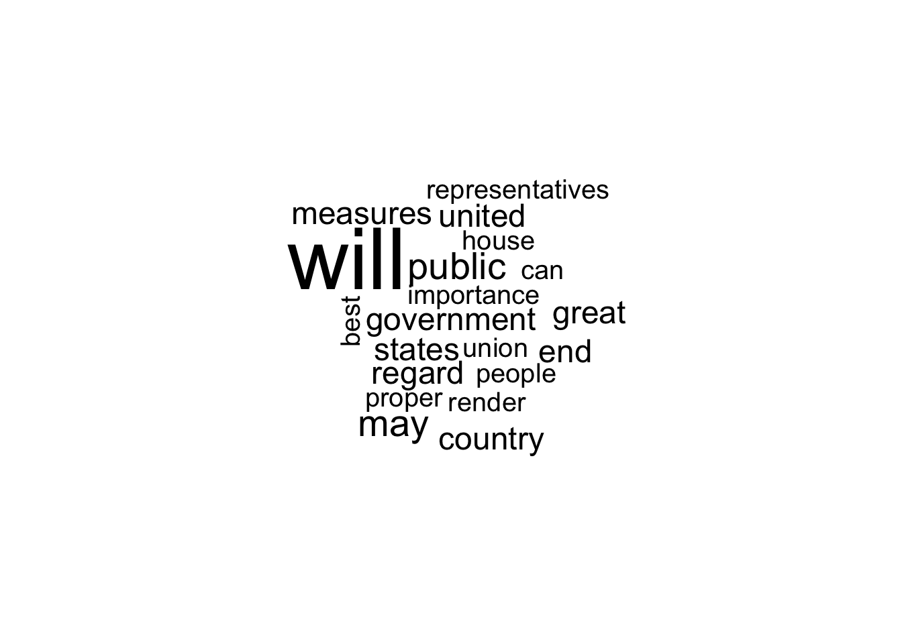
11.4 Word Importance
We use tf-idf (term frequency - inverse document frequency) as a way to pull out uniquely important/relevant words for a given character.
- Relative frequency of a term inversely weighted by the number of documents in which the term appears.
- Functionally, if everyone uses the word “know,” then it’s not very important for distinguishing characters/documents from each other.
- We want words that a speech used frequently, that other speeches use less frequently
## words uniquely important to a character
sotu.tfidf <- weightTfIdf(sotu.dtm)
## convert to matrix
sotu.tfidf.mat <- as.matrix(sotu.tfidf)We can summarize the uniquely relevant words for each speech
Gw1790.tfidf <-head(sort(sotu.tfidf.mat[1,], decreasing=T), n=8)
BO2016.tfidf <-head(sort(sotu.tfidf.mat[236,], decreasing=T), n=8)Gw1790.tfidf intimating licentiousness discern inviolable derive
0.01532343 0.01532343 0.01338545 0.01225180 0.01181748
persuaded cherishing comprehending
0.01181748 0.01082357 0.01082357 barplot(Gw1790.tfidf, cex.axis=.7,
cex.names=.7,
main= "Most `Important' 1790 SOTU Words (tf-idf)",
horiz = T, las=2)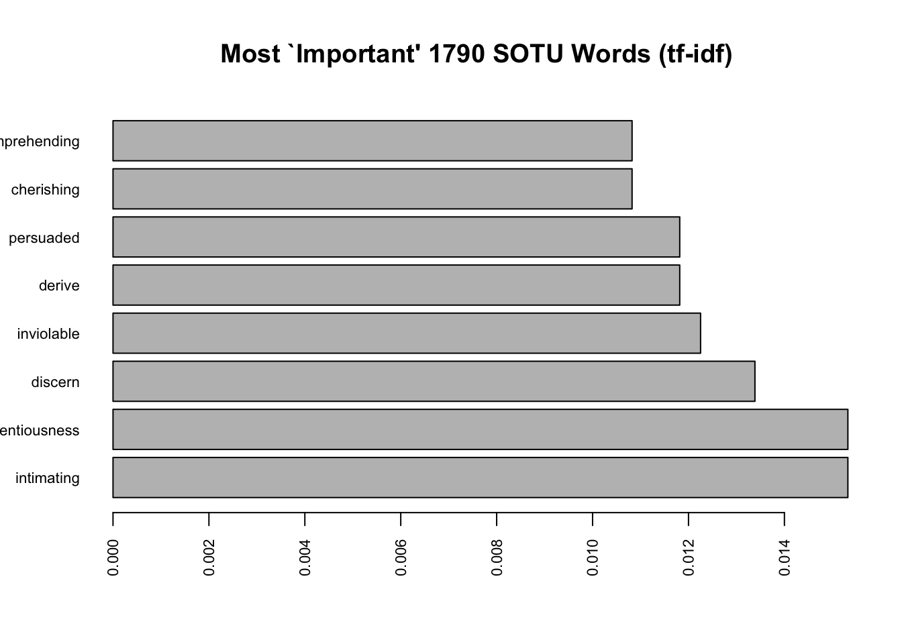
barplot(BO2016.tfidf,
cex.names=.7, cex.axis=.7,
main= "Most `Important' 2016 SOTU Words (tf-idf)",
horiz=T, las=2)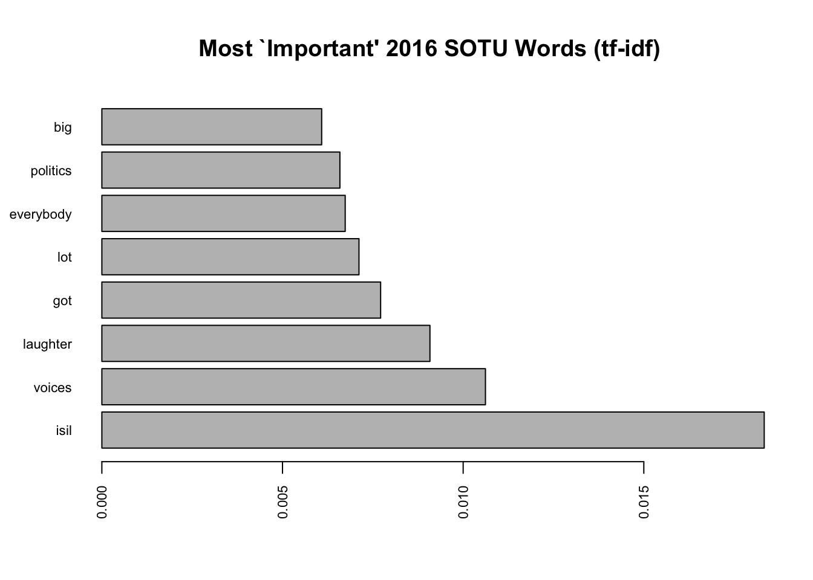
11.5 Additional Descriptive Statistics
Are the length of speeches changing? The nchar() function tells you the number of characters in a “string.”
speeches$speechlength <- nchar(speeches$sotu_text)Let’s plot the length of speeches over time and annotate with informative colors and labels.
Is the length of speeches changing?
plot(x=1:length(speeches$speechlength), y= speeches$speechlength,
pch=15,
xaxt="n",
xlab="",
ylab = "Number of Characters")
## add x axis
axis(1, 1:length(speeches$speechlength), labels=speeches$year, las=3, cex.axis=.7)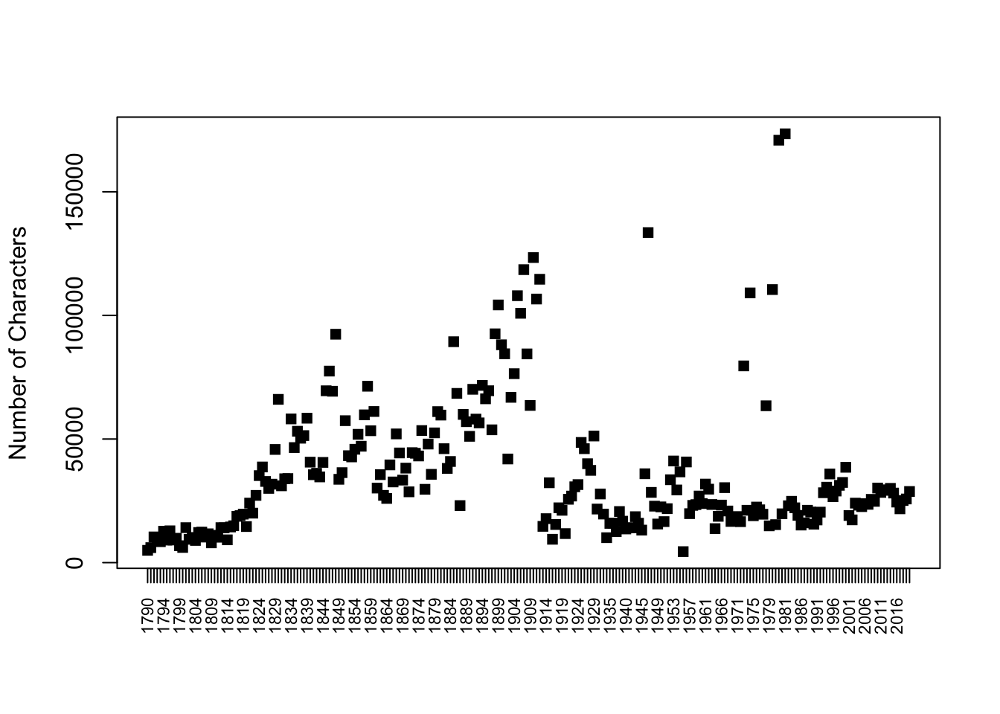
We can add color to distinguish written vs. spoken speeches
speechcolor <- ifelse(speeches$sotu_type == "written", "black", "green3")
plot(x=1:length(speeches$speechlength), y= speeches$speechlength,
xaxt="n", pch=15,
xlab="",
ylab = "Number of Characters",
col = speechcolor)
## add x axis
axis(1, 1:length(speeches$speechlength), labels=speeches$year, las=3, cex.axis=.7)
## add legend
legend("topleft", c("spoken", "written"),
pch=15,
col=c("green3", "black"), bty="n")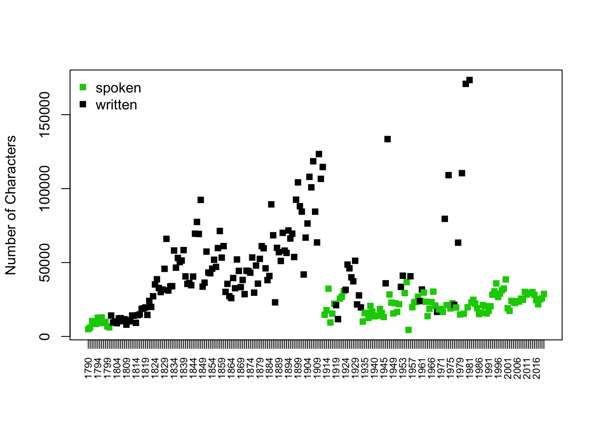
11.5.1 Dictionary Analysis
We can characterize the content of speeches in different ways. For example, we can see if speeches mention specific words, such as `“terrorism.”
- The function
grepl()lets you search for a pattern of text in a character string - The function
str_detect()works similarly with the opposite order of inputs
speeches$terrorism <- ifelse(grepl("terror", speeches$sotu_text), 1,0)
speeches$terrorism2 <- ifelse(str_detect(speeches$sotu_text,"terror"), 1,0)sort(tapply(speeches$terrorism, speeches$president, sum),
decreasing=T)[1:10] George W. Bush William J. Clinton Barack Obama
8 8 7
Ronald Reagan Donald Trump Franklin D. Roosevelt
6 4 4
Andrew Jackson Chester A. Arthur Grover Cleveland
2 2 2
Harry S Truman
2 We can characterize the content of speeches in different ways. For example, we can see if speeches mention specific words, such as “terrorism.”
- The function
str_count()counts the number of times a piece of text appears in a character string
speeches$terrorismcount <- str_count(speeches$sotu_text, "terror")sort(tapply(speeches$terrorismcount, speeches$president, sum),
decreasing=T)[1:10] George W. Bush Barack Obama William J. Clinton
171 37 29
Donald Trump Ronald Reagan Franklin D. Roosevelt
24 10 6
Lyndon B. Johnson Harry S Truman Jimmy Carter
5 3 3
Andrew Jackson
2 We can add multiple words with the | operator. This is often called a “dictionary analysis.”
speeches$warcount <- str_count(speeches$sotu_text,
"terror|war|military|drone")
sort(tapply(speeches$warcount, speeches$president, sum), decreasing=T)[1:10] Harry S Truman Theodore Roosevelt Franklin D. Roosevelt
554 481 441
James K. Polk Jimmy Carter Dwight D. Eisenhower
390 348 332
William McKinley George W. Bush Grover Cleveland
324 323 257
Ulysses S. Grant
233 What are possible limitations of this analysis?
11.6 Application Programming Interfaces
Application programming interfaces (APIs) are tools that allow you to search a large database to extract specific types of information. Social scientists often work with APIs to extract data from social media platforms, government agencies (e.g., U.S. Census), and news sites, among others.
Organizations that develop these APIs can control what types of information researchers can access. Often, they set limits on the types and quantities of information someone can collect. Companies also often monitor who accesses the information by requiring people to sign up for access, apply for access, and/or pay for access.
Example: Census API As an example of an API, the U.S. Census has an API that allows researchers to extract nicely formatted data summaries of different geographic units (e.g., all zip codes in the U.S.).
- Researchers can sign up here for an API “key” which allows the organization to monitor who is accessing what information.
Researchers Kyle Walker and Matt Herman have made an R package that makes working with the API easier.
- Example:
tidycensusfound here allows you to search Census data by providing the variables you want to extract

APIs can make a social scientist’s life easier by providing an efficient way to collect data. Without an API, researchers might have to resort to manually extracting information from online or writing an ad hoc set of code to “scrape” the information off of websites. This can be time consuming, against an organization or company’s policy, or even impossible in some cases. APIs are powerful and efficient.
However, because researchers cannot control the API, the downside is at any given time, an organization could change or remove API access. Researchers might also not have the full details of what information is included in the API, potentially leading to biased conclusions from the data. APIs are great, but we should use them with caution.
11.7 The Politics of Song Choice
When deciding to run for office, political candidates often think strategically about how to introduce themselves. In the lead up to the 2024 presidential election in the United States, several Republicans announced their candidacy for the primary nomination.
As this article in The Hill notes, oftentimes, the candidate celebrates their announcement with a theme song / walkout music / or common song they bring with them on the campaign trail. Politico went even further to ask candidates to submit their top 20 songs. Only some candidates responded, and in this application, we will analyze the playlists of some of the top candidates who submitted their song choices: Chris Christie, Nikki Haley, and Vivek Ramaswamy.
We will analyze some of these songs drawing on the Spotify API.
11.7.1 Setting Up the Spotify API
In order to follow along completely with the Spotify portion, you will need 1) a free account on Spotify https://open.spotify.com/, 2) a developer’s app on Spotify, and the 3) spotifyR package installed in RStudio.
After signing up for a free Spotify account, let’s create the developer’s app by
- going to https://developer.spotify.com/dashboard when you are signed in.
- Select “Create app”
- Give your app a name (can be anything) and description (e.g., For conducting political analysis)
- Set a redirect URI– this won’t matter much for our purposes, so you can use http://localhost:1410/.
- You can leave “website” blank
- Mark the check box for Web API
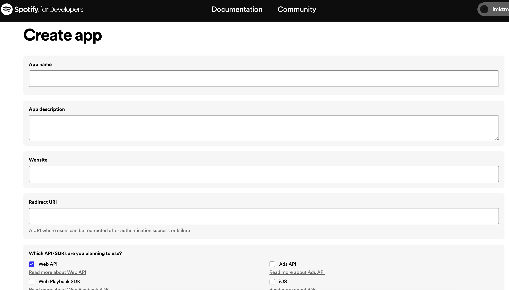
After “saving” the information, click on the “Settings” for the app, where you can view your Client ID and a button called, “View client secret.” We will use these in a moment. Note: do not share these with anyone. Treat these like passwords.
To R we go! We will access the Spotify API through an R package spotifyr. The first time you use this package, you will need to install it.
install.packages('spotifyr', dependencies = TRUE)Every other time, you will need to use the following code:
library(spotifyr)Now, we need to “authenticate” our connection with Spotify using our Client ID and Client Secret credentials. Replace the xxxxxxx’s below with your own credentials and generate the access_token which will be stored in your RStudio environment.
Sys.setenv(SPOTIFY_CLIENT_ID ='xxxxxxxxx')
Sys.setenv(SPOTIFY_CLIENT_SECRET = 'xxxxxxxxxx')
auth_object <- get_spotify_authorization_code(scope = scopes()[c(7,8,9,10,14,15)])Troubleshooting
- Sometimes people get an error about not having “httpuv” installed. If that happens to you, you can also run
install.packages("httpuv")and then retry usinglibrary(spotifyr)and running the setup code. - If you get an error that says “cannot find function”, it may mean that
spotifyrhas not been installed or you have not yet runlibrary(spotifyr). Make sure to run these before using the functions below. - If the
Sys.setenvfunctions run properly, the first time you use them, they will likely open up a web browser page related to Spotify, asking you to agree to the terms of the API. Once you agree, it will say “Authentication complete.” If it does not run properly, it may open a web browser page that says “Invalid login” or something like that.To diagnose that error, I recommend doublechecking that you are- Signed into Spotify and the developer’s Spotify page on the web browser opened via the RStudio session
- That in the Settings page of your Spotify, you have entered the right redirect URI
- That in RStudio, you have entered the correct ClientID and Client Secret without any typos (no extra spaces or accidental “x” left over from when you pasted it)
- After checking these, you can also restart your R session and try again to get a fresh chance of authenticating the API.
Now we can use the API! The first time you try to run a function using the API, you might see a message asking you to “cache” your credentials.
Select 1 by writing 1 where the cursor is in your bottom-left RStudio Console window and hit enter/return .
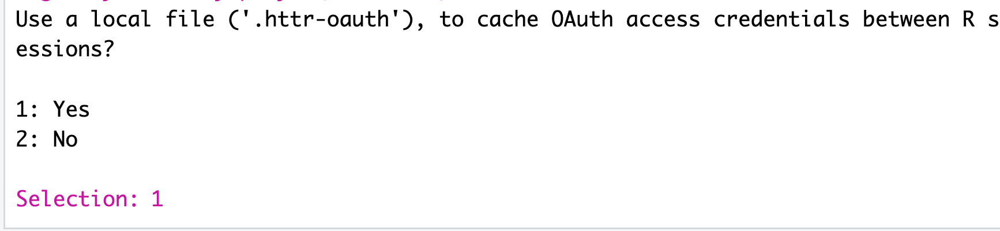
11.7.2 Candidate Danceability and Valence
We will retrieve the playlists from the candidates by providing the function get_playlist_audio_features() with the Spotify identifiers for each playlist. We store it in a dataframe object called candidates.
candidates <- get_playlist_audio_features(username="Politico",
playlist_uris = c("26rVnB3MN03kRyXXWwAne0", "6gk4Omuze4zSr1G2nK1nQ4","2kGJsgdiexWTVlWnTdGSIi"))Note: How do you find the URI if you wanted to on your own? This can be a little tricky. When you are on the web version of Spotify, if you click on the “…” next to the playlist name, artist name, or track name, it provides a menu which includes the “Share” button. By default, the share feature allows you to copy the link to the playlist, a URL. However, this is different from the URI. To get the URI, you can “right-click” on that share button or hold down “control” on a Mac. This will shift it from being the “copy link” to the URI option. See images below to see how holding down “control” after having the menu open shifts the share feature:
Let’s compare the candidates on a few metrics, including danceability (how suitable a track is to dancing from 0 to 1) and valence (musical positiveness from 0 to 1- whether a song is likely to make someone feel happy/cheerful, higher valence, or sad/depressed/angry, lower valence) using a boxplot.
boxplot(danceability~playlist_name, data=candidates, horizontal=TRUE, las=1,
names = c("Christie", "Haley",
"Ramaswamy"),
xlab="Danceability", ylab="",
cex.axis=.6)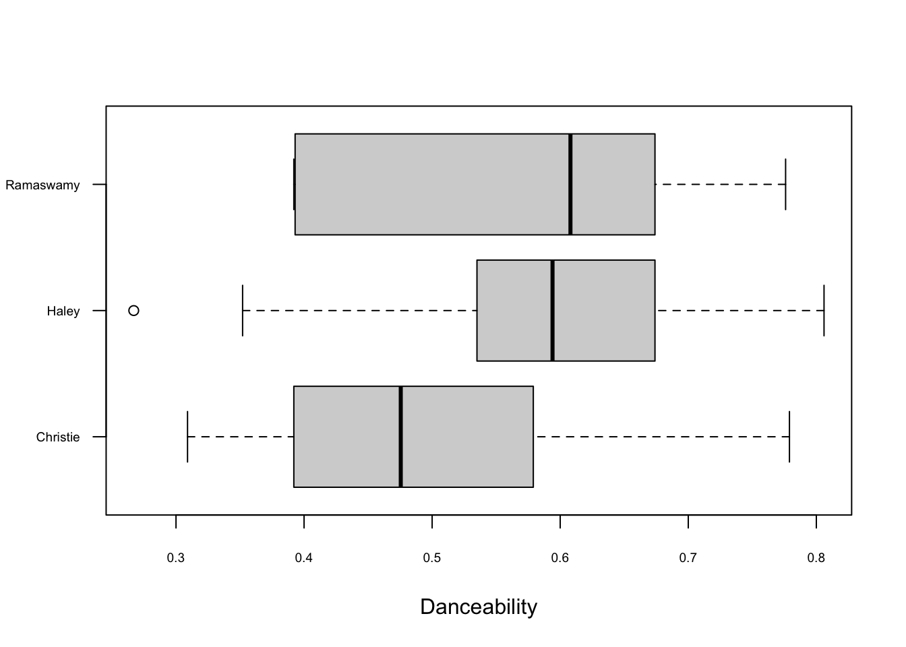
We can also compare the “valence” of songs by candidate.
boxplot(valence~playlist_name, data=candidates, horizontal=TRUE, las=1,
names = c("Christie", "Haley",
"Ramaswamy"),
xlab="Valence", ylab="",
cex.axis=.6)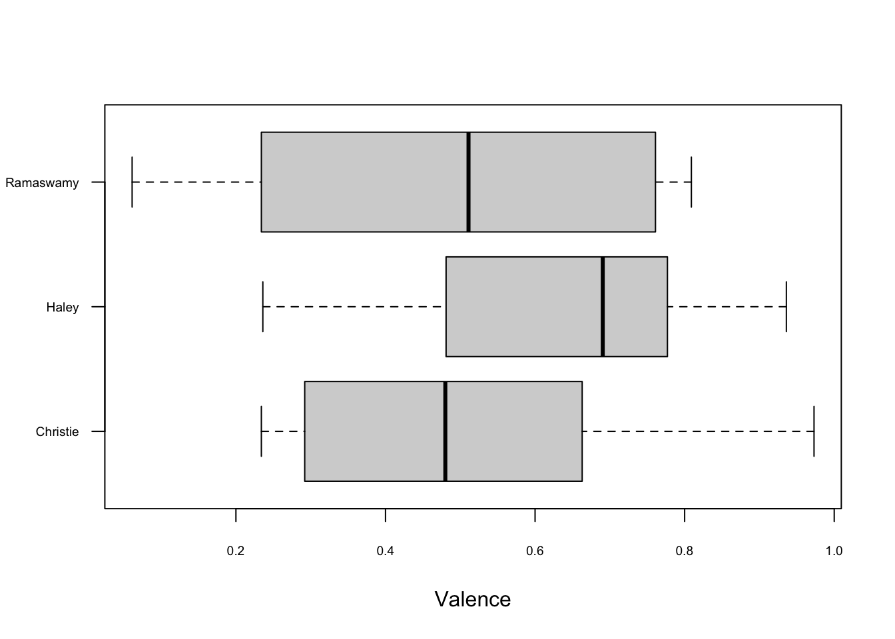
Wow, there is one song from Ramaswamy that has particularly low valence. Which song was this, and was it something the candidate emphasized? Yes! His Eminem moment.
vivek <- subset(candidates, playlist_name = "Vivek Ramaswamy's Top 8 Songs")
vivek$track.name[vivek$valence == min(vivek$valence)][1] "Lose Yourself"11.7.3 Additional Tools
In addition to analyzing whole playlists, you can also retrieve and analyze specific artists or tracks. Here are a couple examples:
## supply a track URI
howdoibreathe_features <- get_track_audio_features(id="174rZBKJAqD10VBnOjlQQ3")
## supply an artist name
ariana <- get_artist_audio_features('ariana grande')11.7.4 Saving R Objects
After you extract data from online, you may want to save them as a hard data file on your computer. This way if you close RStudio, you can reproduce the data.
R allows you to save any R object as an .RData file that can be opened with the load() command. This is discussed on pg. 24 of QSS Chapter 1.
We can demonstrate this now by saving candidates as an RData object. It will automatically save to your working directory, but you can also add a subfolder or alternative file path.
save(candidates, file = "candidates.RData")Then, you can load the file (if you happen to close R/RStudio, restart your computer, etc.) with the load command.
load("candidates.RData")